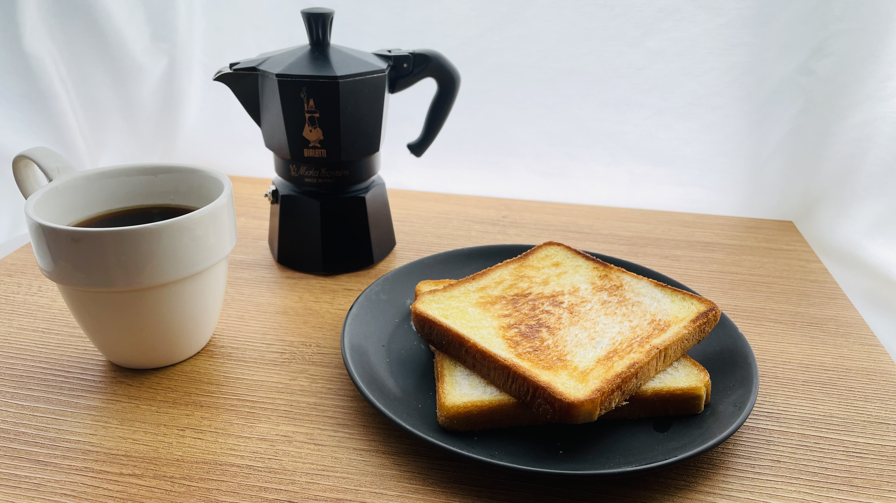
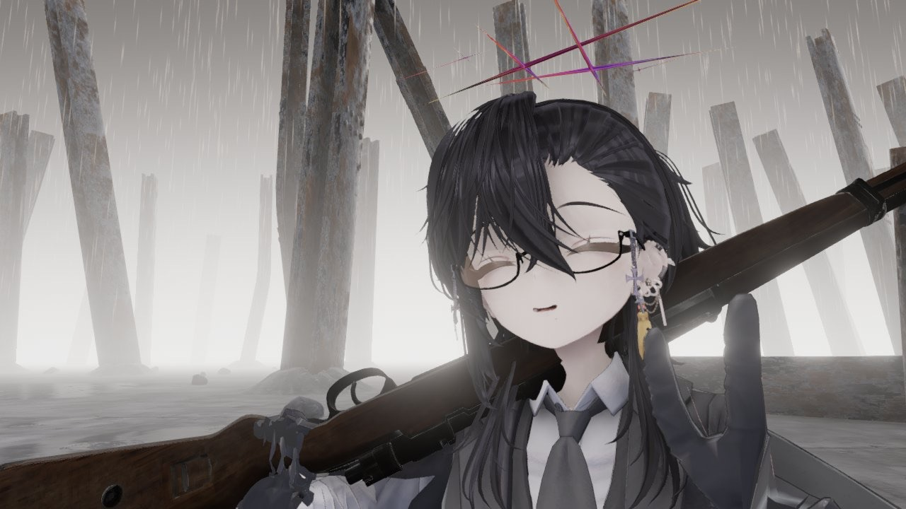
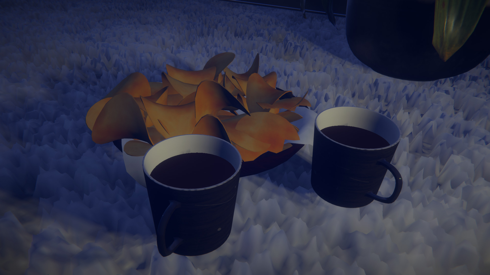
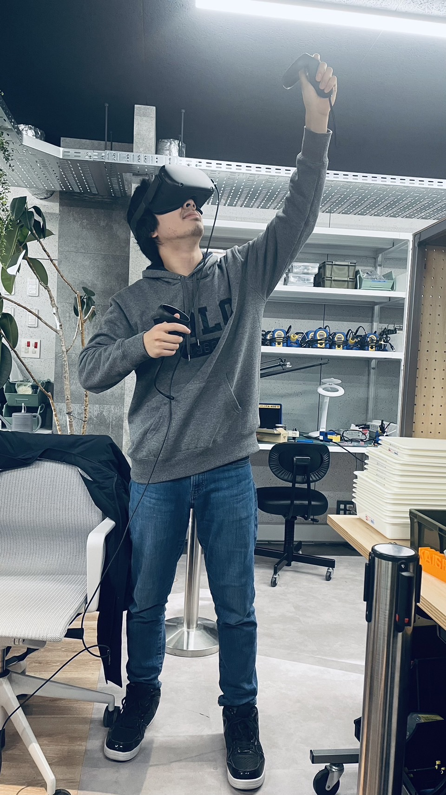

プロフィール
大学: 開志専門職大学
学科: 情報学科
学年: 二年生
趣味

コーヒー: コーヒー好きのカフェイン中毒者です。少し酸味が強いコヒーが好きです。家ではマキネッタという器具でエスプレッソを作っています

VRChat: VRの世界で生活をしています。一日12時間ほどやっており寝る時もつけています
イベント活動
VRC内イベントの主催を行なっております。内容といたしましてはどんな姿にもなれる仮想世界だからこそ内側の自分について考えてみる哲学集会です。
サークル活動
エンジニアサークル PACKERの代表として活動しています。様々な技術を持ってる方と交流し性胃腸できるような企画しています。